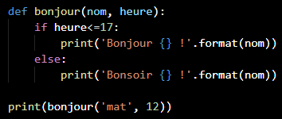

Python

Python est un langage de programmation interprété. Il est placé sous licence libre et fonctionne sur la plupart des plateformes informatiques.
Historique
A la fin des années 1980, Guido Van Rossum participe au développement d'un langage de programmation,
ABC, au
Centrum voor Wiskunde en Informatica d'Amsterdam. En 1989, il profite d'une semaine de vacances pour
écrire
la première version du langage. Il s'est principalement inspiré d'ABC. En février 1991 est publiée la
première version publique (0.9.0) sur le forum Usenet. Python est disponible au grand public.
En 1995, Van Rossum continue son travail sur Python au CNRI aux États-Unis, où il sort plusieurs
versions du logiciel. Python 2.1 fut une version dérivée de Python 1.6.1 et Python 2.0. Depuis la sortie
de
cette version, tout code, documentation et spécification ajouté est détenu par la Python Software
Foundation.
Caractéristiques
Python a été conçu pour être très lisible. Il possède moins de constructions syntaxiques que de nombreux autres langages, parmi lesquels le C. Les blocs sont identifiés par l'indentation : le début du bloc est signalé par une augmentation de l'indentation et la fin par une diminution d'indentation.
 3
Python permet de programmer dans un style fonctionnel et dispose de compréhensions de listes.
Tous les types de base, les fonctions, les instances de classes et les classes elles-mêmes sont
des
objets. Les classes supportent l'héritage multiple.
Modèle objet
Les développeurs Python estiment qu'il suffit d'indiquer, par des conventions d'écriture, les parties publiques des interfaces et que c'est aux utilisateurs des objets de se conformer à ces conventions ou de prendre leurs responsabilités ; leur slogan par rapport à cela est "We're all consenting adults here" qui se traduit par "Nous sommes entre adultes consentants".
Bibliothèque standard
Python possède une grande bibliothèque standard. Le nombre de modules de la bibliothèque standard peut être augmenté avec des modules. La bibliothèque standard est bien conçue pour écrire des applications utilisant Internet. Des modules pour créer des interfaces graphiques et manipuler des expressions rationnelles sont également fournis.
Conventions de style
Guido Van Rossum a mis à disposition un guide appelé PEP 8. Il est toujours maintenu pour l'adapter aux évolutions du langage. Il existe aussi un texte appelé "Zen of Python" :
C
C est un langage généraliste de bas niveau. Il est très utilisé de nos jours. De nombreux langages plus modernes tels que C++, C#, Java, PHP, etc. ont repris sa syntaxe et en partie sa logique. C offre au développeur un contrôle important sur la machine et est donc très utilisé pour réaliser les compilateurs et interpréteurs d'autres langages.
Histoire
Le C a été inventé en 1972 par Dennis Ritchie et Ken Thompson dans les laboratoires Bell. Par la suite, Brian Kernighan aida à populariser le langage, mais fit également des modifications au dernier moment. En 1978, il écrit un livre décrivant le nouveau langage.
Caractéristiques
C est un langage généraliste et de bas niveau. Il propose un très grand nombre de types entiers et flottants qui s'adaptent aux données traitées par le processeur et utilise intensivement les calculs d'adresse mémoire. Le langage ne propose pas à la base de programmation orientée objet, ni de gestion d'exceptions comme on peut en trouver dans d'autres langages (exemple en Python : try /except). Ces caractéristiques en font un langage très utilisé pour les microprocesseurs, les calculs difficiles, le codage de systèmes d'exploitation et les programmes dans laquelle la vitesse est fondamentale. En contrepartie, l'écriture de programmes en C est plus difficile et longue qu'avec des langages de haut niveau. Le compilateur fait égalemet très peu de vérifications concernant les erreurs du programme.
Syntaxe
On peut écrire un programme disant bonjour :

Main est le nom de la fonction principale du programme, sans laquelle il ne peut s'exécuter. Les parenthèses indiquent qu'il s'agit d'une fonction. Les accolades entourant les instructions constituent le corps de la fonction, et sont obligatoires dès qu'il y a plus d'une instruction. Printf est une fonction d'écriture native. Les points-virgules sont obligatoires et marquent la fin d'une instruction. #include <stdio.h> permet d'inclure l'entête stdio.h qui contient les fonctions natives d'entrée-sortie, telles que printf. Int est le type renvoyé par main. Void entre les deux parenthèses veut dire que la fonction n'admet aucun paramètre. Enfin, l'instruction return 0 fait retourner la valeur 0 à la fonction main.
Bibliothèque standard
La bibliothèque est très simple du fait du caractère bas-niveau du C. Elle n'offre aucun support d'interface graphique, de réseau, de gestion avancée d'erreurs internes au programme.
Sources des images
1. Logo de Python. De Python, par PSF, 2020, python.org. Licence Python Software compatible GPL.
2. Van Rossum at the 2008 Google I/O Developer's Conference. De Wikimédia Commons, par José Gnudista, 2009, commons.wikimedia.org. Licence CC-BY-SA.
3. Code Python mettant en valeur les indentations. De Site sur l’informatique, par Mathieu CUVELIER, 2020. Licence CC-BY-SA.